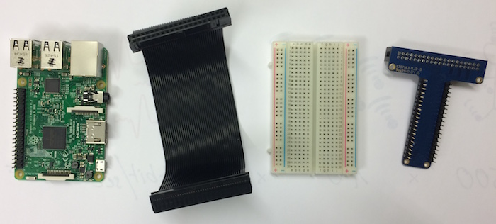
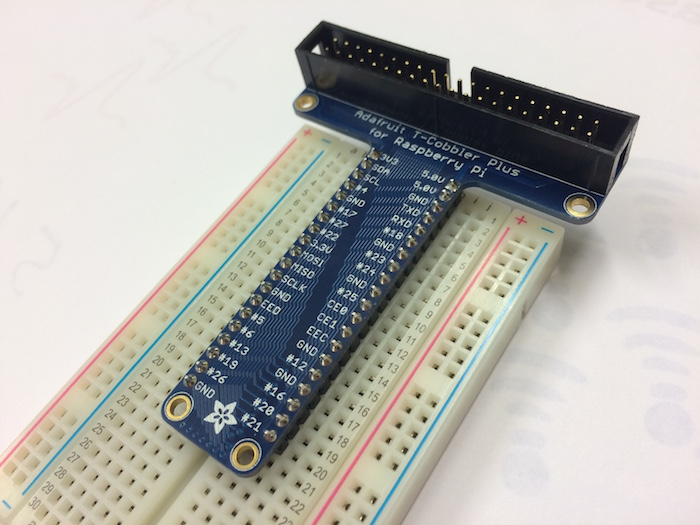
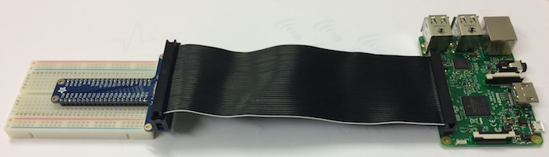

Goal: You can connect the PIR sensor to the Pi and detect a movement by checking the signal on the cable via GPIO. You are able to create a minimal program for that.
In this video you see how the Raspberry Pi can connect to external electronics. The GPIO pins are the electrical pins which are directly connected to the processor. GPIO stands for general purpose input output. We will use the same breadboard as in the video.
The following video contains a good description of a passive infrared sensor, which we will use.
Connect the Breadboard
A breadboard is a protoyping board to test out simple electrical circuits. It is sometimes easier to connect components to the Raspberry Pi with a breadboard, especially with an extension cable.

Step 1: Connect Breadboard and Connector
Push the connector into the breadboard. Try to apply even preassure on the entire connector.

Step 2: Connect with Cable
Connect everything as shown below. (It’s important that the cable is placed as shown on the side of the Raspberry, since it may physically fit both ways.)

Detecting Movement in Python
Power down the Pi, and connect the breadboard.
Connect the PIR (passive infrared) sensor with three cables. Look at the model of your PIR sensor, the cabling may be different between models.
Write a program that detects when the PIR sensor is activated. You can first let the program write something on the output console. In the end the program shoud make some noise when the PIR sensor is activated, like an alarm system.
Hint: When you are using GPIO.setmode(), use GPIO.setmode(GPIO.BCM) and not GPIO.setmode(GPIO.BOARD)